Trabajo
Cuatro salas
Ficción, deporte, documental y publicidad. Cada pieza combina rodaje real y generación por IA bajo dirección humana, y se publica con su desglose: qué se filmó, qué se generó, cómo se integró.
Piezas
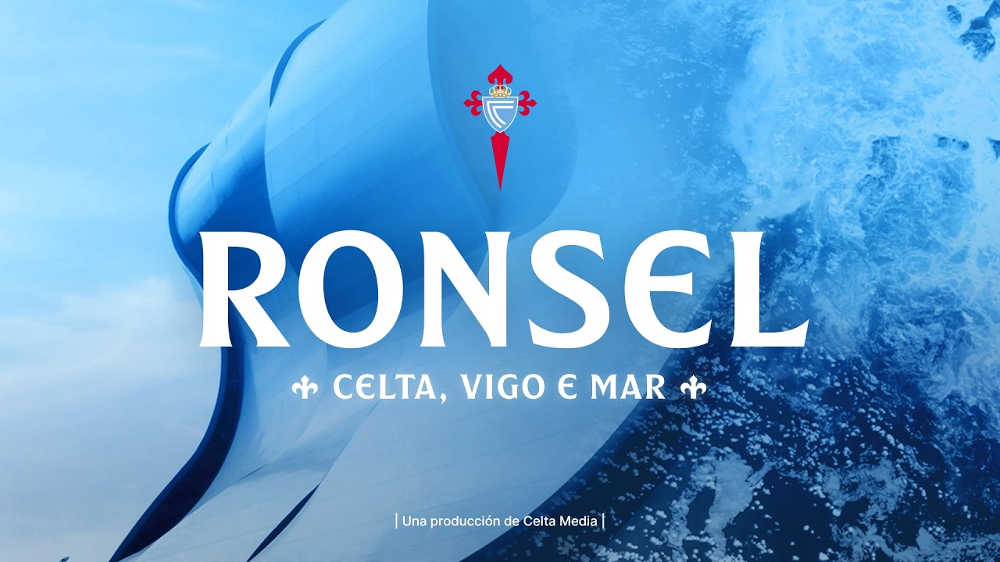
Ronsel No disponible en App Store [PLACEHOLDER: fotograma vertical «Camiseta Reconquista»] Camiseta Reconquista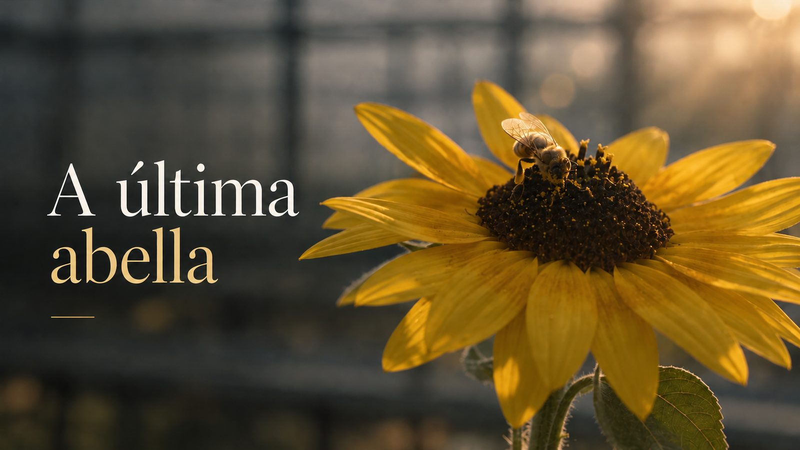
La última abeja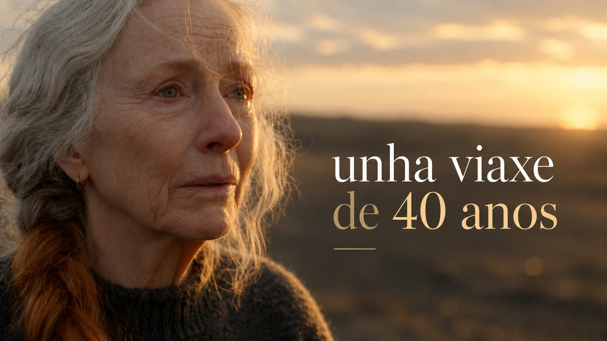
Un viaje de 40 años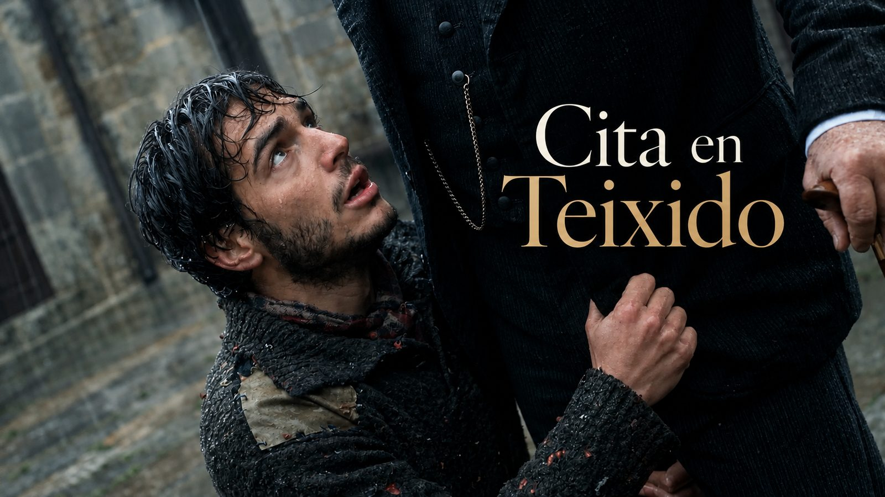
Cita en Teixido [PLACEHOLDER: fotograma vertical «Viaje en el tiempo»] Viaje en el tiempo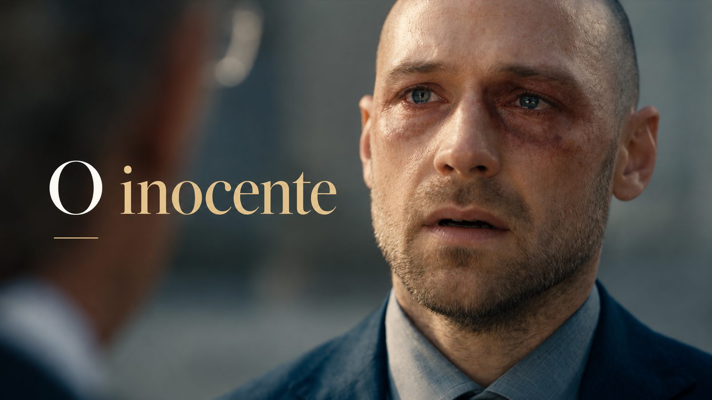
El inocente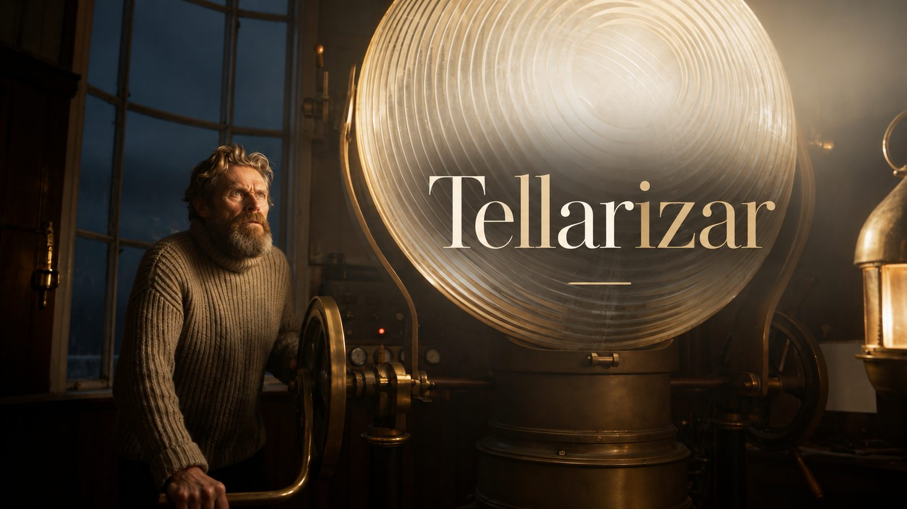
Tellarizar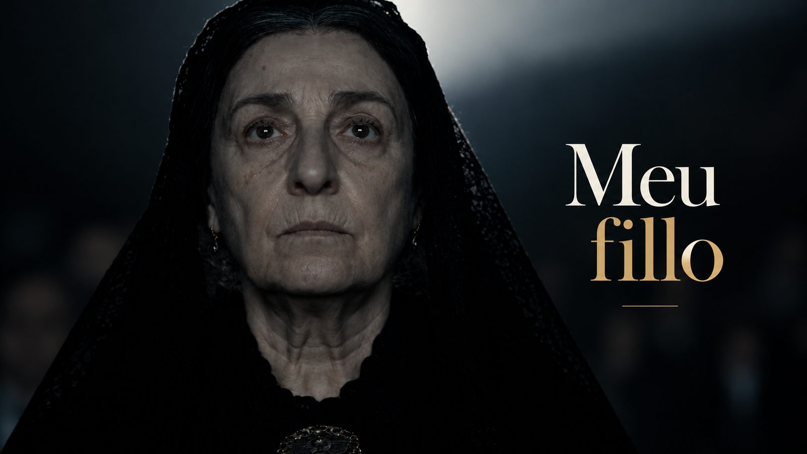
Mi hijo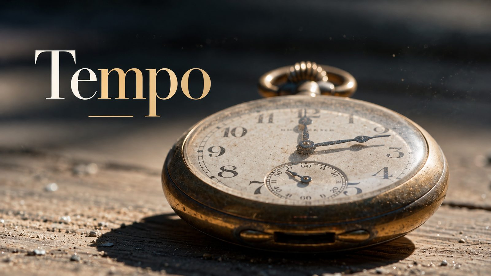
Tiempo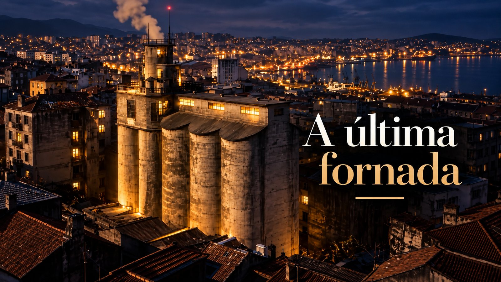
La última hornada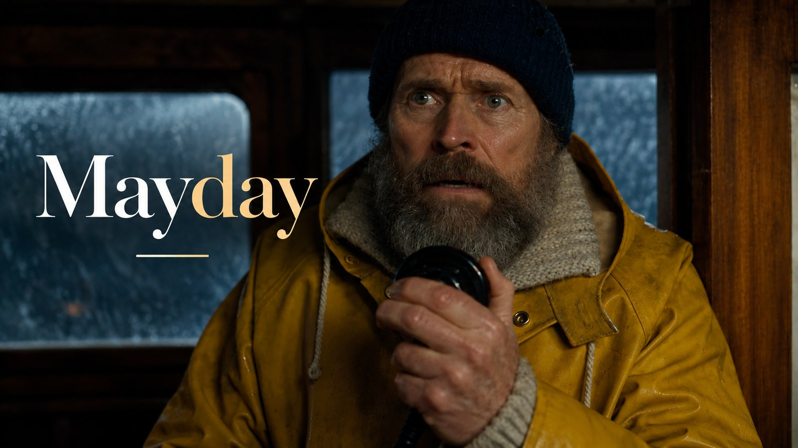
Mayday Invasión alienígena
Invasión alienígena
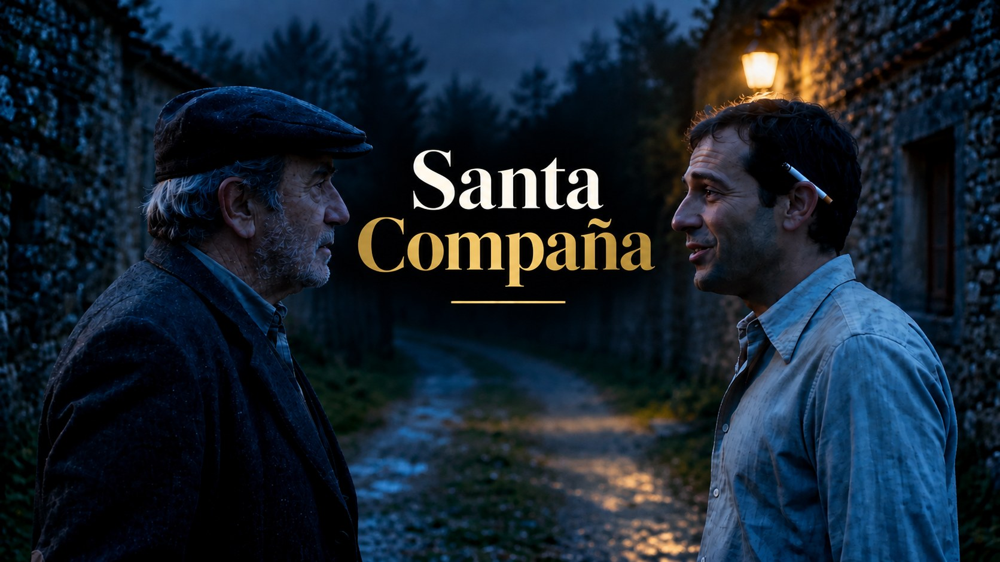
Santa Compaña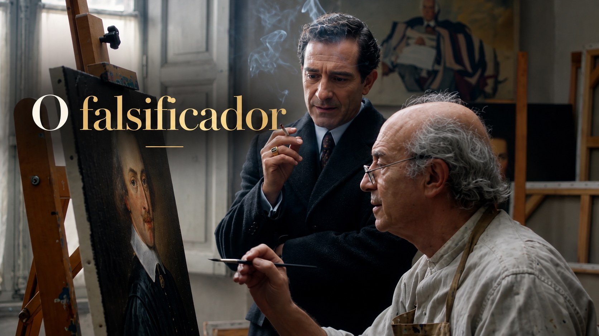
El falsificador
Para vosotros
¿Y si la próxima pieza fuera vuestra película?
Dos fotografías, una conversación y tres o cuatro minutos de cine protagonizados por vosotros.